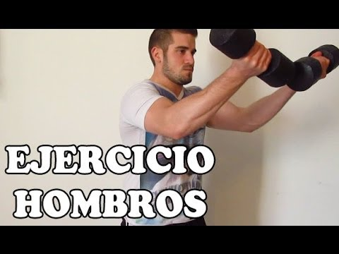

Welcome to Ejercicios efectivos para los hombros
Los mejores ejercicios de hombros según 5 expertos en fitness | GQ España
2021.06.26 20:07Skip to main content Edition España Australia Brasil Britain China France Germany India Italia Japan Korea México Middle East Portugal South Africa Taiwan Thailand Türkiye United States Россия Buscar Suscríbete Open Navigation Menu Noticias Moda Zapatillas La Buena Vida Cuidados Compras GQ TV Fitness
Los mejores ejercicios de hombros según 5 expertos en fitness
Para tener una buena postura, coger volúmen y ponerte fuerte, te dejamos por aquí los mejores ejercicios de hombros que puedes hacer estas semanas.Por David Levesle y
13 de marzo de 2020 Hablamos con cinco expertos del fitness para que compartan con nosotros los mejores ejercicios de hombros para una figura fortalecida y resistente. J. Ivan Rodrguez Pacheco / EyeEm*Este artículo sobre ejercicios de hombros fue publicado originalmente en la edición británica de GQ
Si bien no todo el mundo se merece nuestro hombro para llorar sobre él, a lo mejor quieres ofrecérselo a todo el mundo para presumir de ellos. Porque sí, aunque no lo creas, los hombros también pueden ser muy sexis si les dedicas unos minutos en tu rutina fitness.
No caigamos en lo superficial: hacer ejercicios de hombros no sólo tiene ventajas a nivel estético. Ejercitar esta zona superior del cuerpo te proporciona una lista interminable de beneficios para ti y todo tu cuerpo. Además, los puedes llevar a cabo tanto en casa como en el gimnasio . “El equilibrio y la proporción ayudan a generar una buena estabilidad, la cual disminuirá las posibilidades de sufrir una lesión ”, explica Kristian Phillips, ex jugador de rugby reconvertido en entrenador de élite en Equinox.
En los hombros hay una entremezcla de 50% de fibras de espasmo rápido y 50% de fibras de espasmo lento, por lo que responden mejor a múltiples movimientos, intervalos de descanso más cortos y pesos variables , explica Ahmed Jaffer, de Psycle. Considera los tempos, los intervalos de repeticiones y el rango de movimiento cuando añadas los ejercicios de hombros a tu rutina .
“Explicado de manera sencilla, el músculo del hombro, también llamado deltoide, está formado por diferentes ‘cabezas’ llamadas deltoides anteriores (frontal), deltoides laterales (intermedio) y deltoides posteriores (trasero)”, añade Ross Edgley. “ Los gimnasios de todo el mundo están plagados de hombres que sólo entrenan el deltoides anterior y lateral con levantamientos laterales de mancuernas y press frontales. Sin embargo, este es un rango de movimiento muy limitado y, para entrenar todas las ‘cabezas’ del hombro, es necesario trabajar distintos rangos de movimiento”.
Hoy es tu día de suerte: hemos considerado todas estas indicaciones por ti. Hemos reunido a varios de nuestros expertos favoritos , junto a entrenadores personales de nuestros gimnasios favoritos y centros fitness cosmopolitas, para que subas de nivel en tus ejercicios de hombros . Desde trabajar tus deltoides hasta darle un mayor cuerpo a tu tronco superior, estos son los ejercicios de hombros que debes hacer para desbloquear un nuevo nivel fitness .
Joe Corrie, jefe de entrenamiento en Core Collective
Ejercicio 1: Press de empuje con barra de pesasDespués de calentar durante unos minutos, éste es mi ejercicio favorito con el que comenzar mi rutina de hombros. El ligero uso tanto de las piernas y caderas como del tronco superior de tu cuerpo te permite colocar mucho peso sobre tu cabeza . Este ejercicio de hombros ayuda mucho a desarrollar fuerza, un volumen corporal general y potencial atlético. Últimamente he llevado a cabo seis sets con los siguientes rangos de repetición: 5, 5, 5, 3, 3, 3.
Empieza de pie con los pies separados a la misma distancia de los hombros y agarra la barra de pesas con las puntas de los dedos y los codos mirando hacia adelante. Mantén la barra en la parte delantera de tus hombros y ponte de cuclillas poco profundas , centrando tu peso bajo la barra. Presiona los talones y eleva la barra directamente por encima de tu cabeza hasta que tus codos estén bloqueados. Devuelve la barra a la posición inicial (usando las rodillas para amortiguar si está trabajando con pesas más pesadas).
Ejercicio 2: Press estricto con barra de pesas
Después de llevar a cabo el press de empuje, suelo continuar con un press estricto, el cual me proporciona más beneficios al centrarme más en el tiempo que en la tensión . El press estricto no emplea nada de asistencia del tronco inferior del cuerpo y el movimiento se inicia sin nada de aceleración, lo cual demanda unas dosis mayores de fuerza concentrada . He estado practicando sets de 8-10 repeticiones tras completar el press de empujo.
Empieza de pie con los pies separados a la misma distancia de los hombros y agarra la barra de pesas con las puntas de los dedos y los codos mirando hacia adelante. Mantén la barra al frente de tus hombros y, tras tomar una amplia bocanada de aire, refuerza tu core y levanta la barra en vertical por encima de tu cabeza. A poca distancia de la barra mientras levantas el peso, mueve tu torso hacia adelante una vez que la barra haya pasado por tu frente. Sostén la barra sobre tus hombros y cierra los codos antes de devolver a la barra a la posición inicial.
Exercise 3: Press de hombro arrodillado con un solo brazo con pesaEste es otro de mis ejercicios favoritos de hombros, ya que complementa a la perfección los dos ejercicios anteriores y te proporciona un bonus extra al mejorar la estabilidad de tu core y de tus caderas (además de proporcionarte muchos más beneficios asociados al ejercicio unilateral). Una vez más, haz cuatro sets de 8-10 repeticiones.
Empieza arrodillándote sobre una pierna , hincando la rodilla en el suelo en línea recta con la cadera y el otro pie dibujando una línea frontal con la rodilla (formando así dos ángulos con tus rodillas) . Agarra una pesa con la mano del mismo lado del que estás arrodillado, levántala y sostenla a la altura del hombro. Tras tomar una bocanada de aire, refuerza tu core y levanta la pesa en vertical sobre tu cabeza hasta que tus codos estén bloqueados y tu bíceps justo al lado de tu oreja. Mantén tu torso tan recto como puedas durante todo el ejercicio. Devuelve la pesa a la posición inicial de manera controlada.
Kristian Phillips, entrenador personal en Equinox
Ejercicio 1: Face pulls con cablesLos ejercicios uno y dos son mis dos ejercicios de calentamiento favoritos que aseguran que mis deltoides, escápula y músculos del manguito rotatorio estén listos para la acción. Activar los deltoides traseros, el escapulario y los músculos del manguito rotatorio antes de levantarlos es primordial para reducir el riesgo de lesiones de hombro . No necesitas cargar con mucho peso para llevar a cabo este ejercicio. En cambio, debes enfocarte en desarrollar su técnica.
En primer lugar, la polea de cable debe estar colocada a la altura del hombro antes de comenzar. En esta posición, agarra el cable con los brazos extendidos delante de ti. Tira de las asas hacia el puente de la nariz mientras mantienes la parte superior de los brazos paralelos al suelo con las dos asas del cable a cada lado de tu cara . En este punto, aprieta los omóplatos, pasa un segundo en esta posición para una activación total y vuelve a la posición inicial. Haz tres series de 12 repeticiones.
Ejercicio 2: Halo con discoObjetivo principal: aumentar el rango de movimiento (ROM). Parece obvio, ¿verdad? Este movimiento específico en realidad fortalece la conexión de tu mente y tus músculos a otro nivel . Esto se debe a que requiere que tus hombros, tríceps, espalda y core trabajen juntos para mover el disco alrededor de la cabeza en forma de halo . Un ejercicio simple, pero muy efectivo, que mejora a la vez la movilidad del hombro, la movilidad torácica y la estabilidad del core.
Con las dos manos, sujeta firmemente el disco (de 5-10 kg de peso) . Ponte recto y estabiliza el cuerpo. Recuerda, vamos a necesitar que los músculos trabajen en equipo para hacer este ejercicio. Activa el core y levanta el disco de frente hasta que el círculo central esté directamente alineado con tus ojos. Aquí deberías tener los brazos completamente extendidos frente a ti.
A partir de aquí, vas a mover el disco alrededor de la cabeza en forma de halo. El disco debe permanecer lo más cerca posible de la cabeza, mientras que son los brazos los que la rodean. Nota: debes mantener el cuello y la cabeza en una posición relajada y estable durante todo el movimiento.
Asegúrate de realizar este ejercicio de manera lenta y controlada para maximizar la movilidad. Realiza tres series de 12 repeticiones en cada sentido.
Ejercicio 3: Press de hombros con kettlebell alternoLos ejercicios tres y cuatro están pensados para realizarse como un superconjunto.
Es hora de apuntar a gran parte del músculo de la parte superior del cuerpo y el core. Para este ejercicio, tendrás que sentarte bien recto en el suelo , sin usar las piernas para estar estable ni apoyarte. Simplemente aísla los hombros y el tronco para desafiar tu fuerza y el control postural aún más.
Mantén una postura erguida, sin encorvarte. Las piernas deben estar completamente extendidas y separadas a la misma distancia que los hombros. Agarra dos kettlebells en la posición de agarre vertical a la altura de los hombros. Prepárate. Alarga un brazo hacia arriba mientras mantienes el otro en posición. Baja la kettlebell y repite en el lado opuesto. ¿Has notado el esfuerzo en el core y los oblicuos? Genial, ahora mantén la misma intensidad para todas las repeticiones. Recuerda, nada de encorvarte.
Ejercicio 4: Chin-UpsUna prueba de carácter. Entiendo completamente que no todos son capaces de realizar una chin-up. Dicho esto, lo más seguro es que, si no puedes, tu objetivo sea hacerlo. Así que vamos a meterte hasta el fondo y ver cómo nos va.
Coge firmemente la barra con un agarre supino (palmas hacia dentro), separando las manos más o menos a la altura de los hombros. Aún abajo, estabiliza es cuerpo y dobla las rodillas. Es hora de trabajar. Tira verticalmente hacia arriba empujando los codos hacia el suelo. Sigue tirando hacia arriba hasta que tu barbilla pase la barra. Baja de forma lenta y controlada, concentrándote en la prolongada tensión muscular hasta que tengas los brazos completamente extendidos. Después repite.
Si eres nuevo en el gimnasio y te faltan varios meses para hacer chin ups, el mejor lugar para empezar sería la dorsalera . Aquí puedes ir variando el peso y centrarte en construir una base.
Si ya casi estás a punto, ¿por qué no intentas atacar el desafío del bodyweight con la ayuda de una banda ? Usa una banda de resistencia para desarrollar tu técnica y confianza antes de avanzar al siguiente paso.
Si dominada de chin up te resulta cómoda, es hora de meter algunos kilos adicionales en un cinturón con peso. Haz cuatro series de 8-12 repeticiones.
Ejercicio 5: Elevación frontal de discoLos ejercicios cinco, seis y siete deben realizarse como un tri-set. Los siguientes tres ejercicios se han combinado para que ataques los hombros desde tres ángulos diferentes. Recuerda la importancia de equilibrar los músculos.
La elevación frontal de disco está específicamente diseñada para apuntar a los deltoides anteriores y laterales. La función de los deltoides anteriores es elevar el brazo hacia adelante. El ejercicio de elevación frontal simula este movimiento.
Ponte de pie y recto, con un agarre neutral en el disco. Si puedes, te recomiendo que uses un disco Bumper olímpico para este ejercicio: te separará instantáneamente los brazos al ancho de los hombros. Doblando mínimamente el codo, eleva el disco desde el nivel de la cadera hasta el nivel de los ojos . Esto aislará tu deltoides anterior.
Si quieres activar los trapecios , yo te recomiendo que eleves el disco un pelín más alto que el nivel de los ojos para una quemazón extra. Lenta y controladamente, baja el disco a un ritmo estable hasta el nivel de la cadera. Después repite el proceso.
Ejercicio 6: Vuelos posteriores con mancuerna inclinadoA continuación, es hora de darle a los deltoides posteriores . Fortalecer estos músculos usando los vuelos posteriores ayudará a mejorar las malas posturas, favorecer una espalda erguida y mejorar el equilibrio .
En primer lugar, ponte de pie con los pies separados al ancho de los hombros y las pesas a los lados . En segundo lugar, empuja las caderas hacia atrás y en la posición de la bisagra de cadera , trae el pecho hacia delante, casi paralelo al suelo. Deja que las pesas cuelguen hacia abajo , y mantén tus palmas frente a frente.
Mantén un core duro, la columna vertebral neutra y las rodillas ligeramente flexionadas. Exhala y eleva ambos brazos hacia los costados , apretando lateralmente los omóplatos el uno contra el otro. Mantén una ligera flexión en los codos mientras tiras de los omóplatos hacia la columna vertebral. Inhala mientras baja las mancuernas a la posición inicial. Prepárate, y a por ello de nuevo.
Ejercicio 7: Levantamiento de hombros con pesasNada es mejor para construir unos trapecios grandes que el peso pesado. Por lo tanto, siempre que hagas las cosas bien durante el movimiento, cuanto más pesado, mejor. El trapecio superior controla el movimiento de los omóplatos, así como la parte superior de la espalda y el cuello. Cuando estos músculos se fortalecen mediante el ejercicio, es más fácil mantener una postura adecuada.
Ponte de pie y recto, con los pies separados al ancho de los hombros, mientras sostienes la barra con las dos manos frente a ti con un agarre prono (las palmas hacia los muslos). Las manos deberían estar ligeramente más separadas que el ancho de los hombros en la barra.
Levanta los hombros todo lo posible , exhala y mantén la contracción un segundo. Evita levantar la barra usando los bíceps. A partir de ahí, regresa lentamente a la posición inicial e inhala. Prepárate para hacerlo de nuevo. Realiza cuatro series de 12 repeticiones . Como he dicho antes, haz estos tres ejercicios como un conjunto triple.
Kristian es un entrenador de élite en Equinox y cuida a muchos de los miembros de alto perfil del club aportando su experiencia como ex profesional de rugby al gimnasio.
Josh Silverman, Jefe de Educación en Third Space
Ejercicio de hombros 1: landmine pressEste es un gran ejercicio de hombros que es suave con esta zona . La mayoría de las personas no tienen el alcance para extender los brazos sobre la cabeza con tensión muscular.
Coloca un extremo de la barra olímpica en un soporte para el suelo y agrega peso al otro extremo. Levanta el extremo pesado de la barra y colócalo sobre el hombro izquierdo o derecho, con los pies separados al mismo ancho de los hombros (alternando si lo deseas). Dobla ligeramente las rodillas, refuerza tu core y los glúteos, mantén la espalda recta y los omóplatos contraídos. Empuja el peso directamente hacia arriba.
Ejercicio de hombros 2: press con mancuerna rusa de abajo hacia arribaEste es un excelente ejercicio que hace trabajar a todo el músculo . Debido a que la pesa rusa es inestable, tanto los deltoides posteriores como anteriores deben contraerse para evitar que te caigas.
Comienza en una posición con una rodilla en el suelo y el otro pie frente a ti. Sostén una pesa rusa con la mano del mismo lado que rodilla en el suelo. La mancuerna rusa debe mantenerse con la parte inferior hacia el techo. De manera controlada, sube la mancuerna en el aire asegurándote de que no se caiga.
Ejercicio de hombros 3: elevación lateral en poleaDeshazte de las mancuernas y cámbialas por una polea cuando hagas una elevación lateral. La razón es que el perfil de resistencia del cable coincide perfectamente con nuestro perfil de resistencia en este movimiento. Una mancuerna es liviana cuando estamos frescos y pesada cuando estamos débiles en este movimiento, por lo que no obtendrás la tensión deseada.
Comienza con el cable en su posición más baja y conecta un asa en forma de D . En posición lateral a la máquina de polea, coge el asa con la palma hacia abajo con la mano opuesta. Dobla ligeramente las rodillas y, manteniendo el brazo recto, levanta el cable en un movimiento rápido para alinear la palma de la mano con el hombro.
Ahmed Jaffer, entrenador de fuerza en Psycle London
Ejercicio de hombros 1: push press excéntricoEl peso debe ser más pesado que el del press normal . Comenzando con el empuje habitual, sube por encima de la cabeza. Una vez que la barra esté en su altura máxima, haz una pausa en la parte superior durante un segundo y baja lentamente el peso hacia el pecho durante 3-5 segundos y repite la acción.
Este fuerte movimiento negativo controlado estimulará el crecimiento y la fuerza en poco tiempo sobre la región del hombro, incluidos tus deltoides y trapecios . Haría unas a 5-8 repeticiones por serie. Si logras un rango de repeticiones más alto, diría que es hora de que aumentes de peso.
Para el resto de los ejercicios, recomendaría controlar el movimiento tanto como sea posible en lugar de levantar objetos más pesados y con sets más grades . Recomiendo 2-3 supersets de 8-12 repeticiones.
Ejercicio de hombros 2: elevación con mancuernas / polea lateralCon una pesa en cada mano y de pie, levanta las pesas lateralmente hasta la altura de los hombros levantando los codos . De esta manera, tus brazos tendrán una ligera flexión para evitar cualquier tensión en el manguito de los rotadores y, en su lugar, te concentrarás en tus deltoides.
Ejercicio de hombros 3: Elevación de disco / mancuerna frontalSujeta firmemente el disco y levántalo frente a ti hasta que el centro del disco alcance el nivel del hombro, asegurando una flexión muy leve en los brazos (evitando la tensión del manguito de los rotadores).
Ross Edgley
Ejercicio de hombros 1: press por detrás del cuelloIntenta agregar supersets en tu rutina de hombros . Aquí es donde se realizan múltiples ejercicios dentro de un set. Esto es particularmente bueno para los hombros que, por su naturaleza anatómica, funcionan en muchos rangos de movimiento. Estos tres ejercicios son un ejemplo.
Este es un press de barra convencional, pero realizada detrás de la cabeza . Descansar la barra detrás del cuello y en la parte superior de los trapecios durante la fase descendente obliga a los hombros a trabajar en un rango de movimiento diferente al press militar tradicional . Realiza ocho repeticiones.
Ejercicio de hombros 2: Fly invertido inclinadoAcuéstate en un banco inclinado (boca abajo) para que tu estómago descanse sobre el banco y tu cabeza pueda ver por encima. Coge una pesa en cada mano con las palmas frente a frente . Mientras mantienes los codos ligeramente doblados, levanta las pesas hasta que estén a la altura de los hombros. Para y luego vuelve a la posición inicial. Realiza ocho repeticiones.
Ejercicio de hombros 3: upright rowPonte derecho y sostén una barra frente a ti. Con un agarre por encima, levanta la barra hasta justo por debajo de la barbilla. Todo el tiempo mantén las palmas de cara a tu cuerpo. Para y vuelve a la posición inicial. Realiza 12 repeticiones en total.
También te puede interesar:
Los ejercicios de hombros que harán que (por fin) te sienten bien las camisetas sin mangas
Cómo hacer bien press de hombro para reforzar la musculatura interna
Los mejores ejercicios con mancuernas para aumentar tu masa muscular
Etiquetas Entrenamiento Entrenamiento para ser el tío con el mejor cuerpo del verano Entrenamiento en casa Gimnasio Fitness
Más en GQ
Noticias Moda Zapatillas La Buena Vida Cuidados Compras GQ TVCondé Nast España
Glamour Vogue Vanity Fair Traveler GQ AD Quiénes somos Condiciones de uso Política de Privacidad Bases legales de concursos Gestion medioambiental Publicidad Política de cookies Instrucciones adblocker Newsletter Suscríbete a GQ Política de afiliación No deseo compartir mi información personal© 2021 Condé Nast
Select international site España Australia Brasil Britain China France Germany India Italia Japan Korea México Middle East Portugal South Africa Taiwan Thailand Türkiye United States Россия